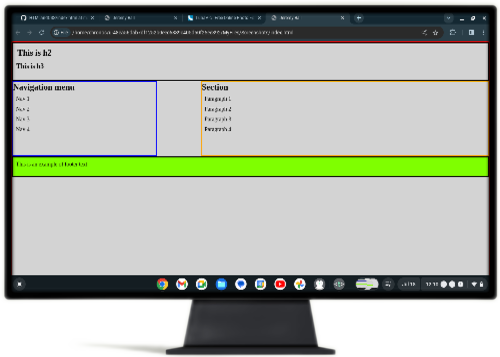
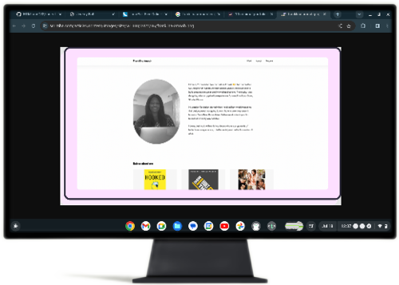
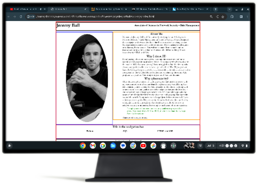

Associate of Science in Network Security - Risk Management
Building a website using HTML and CSS
Step 2
I like to work from the top down so I start with the header. I found a logo on a free image site and touched up all my margins and paddings to give my header an almost ready look

Step 4
After using Google to find minimalist templates for websites I found this one. It looks like it was made by a developer named Franklina. Unfortunately, the link to her site is down. But that’s ok because we’re just going to use this as a reference.

Step 6
Here I just snapped a quick picture at my desk, rearranged my header text, and organized my about me section so that it is slimmer and sits next to the image. All that’s left now is the final touch ups by adding a body, background, and getting the spacing just right.

Step 7
For the final touch-ups I simply remove the borders, add a background to the body and html, then begin spacing my elements where I want them. In an effort to make the site look similar to Franklina’s I crunched the text in the about me and sized/centered it with the image. This is just a rough draft and will likely go through changes as I make the rest of the site using the same template.